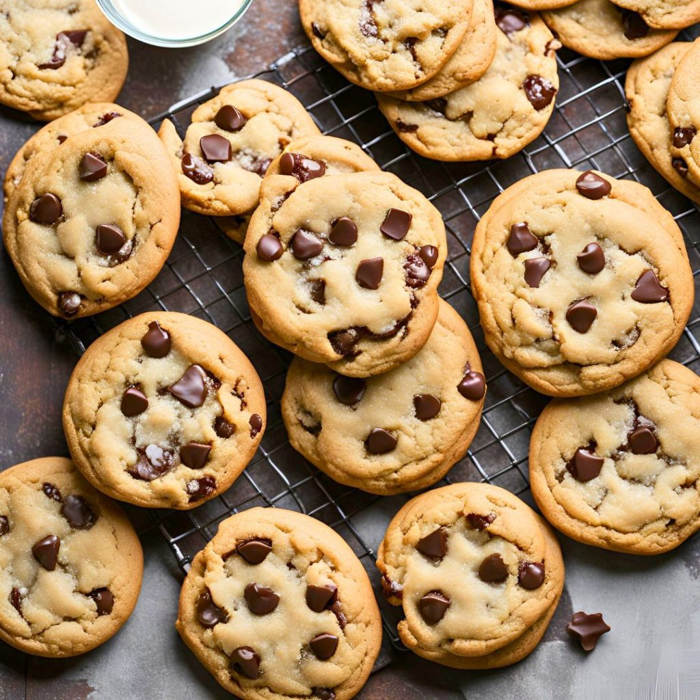

Chocolate Chip Cookies
Bake Time: 9min
Prep Time: 15min
Reviews: 4.6 Stars
Serving: 5 dozen

Ingredients
- 2 1/4 cups all-purpose flour
- 1 teaspoon baking soda
- 1 teaspoon salt
- 1 cup (2 sticks) butter, softened
- 3/4 cup granulated sugar
- 3/4 cup packed brown sugar
- 1 teaspoon vanilla extract
- 2 large eggs
- 2 cups (12-ounce package) NESTLÉ® TOLL HOUSE® Semi-Sweet Chocolate Morsels
- 1 Tbsp. of all-purpose flour
Directions
- Preheat oven to 375° F.
- Combine flour, baking soda and salt in small bowl. Beat butter, granulated sugar, brown sugar and vanilla extract in large mixer bowl until creamy. Add eggs, one at a time, beating well after each addition. Gradually beat in flour mixture. Stir in morsels and nuts. Drop by rounded tablespoon onto ungreased baking sheets.
- Bake for 9 to 11 minutes or until golden brown. Cool on baking sheets for 2 minutes; remove to wire racks to cool completely.